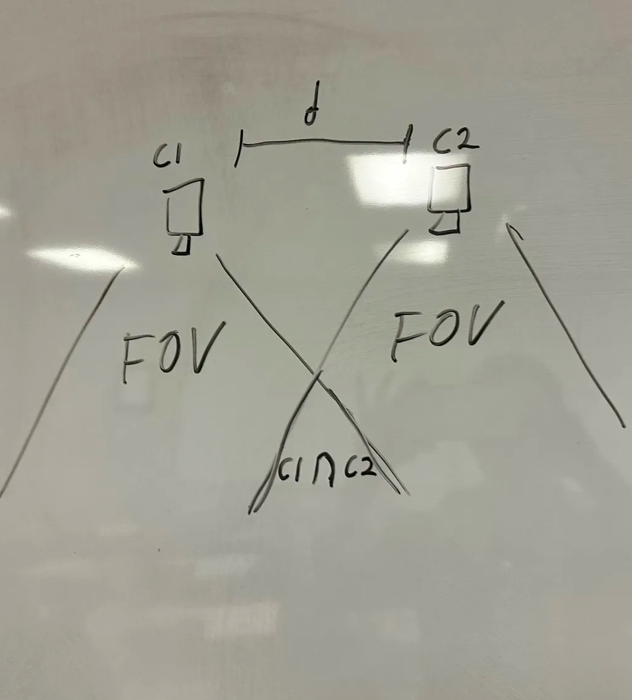
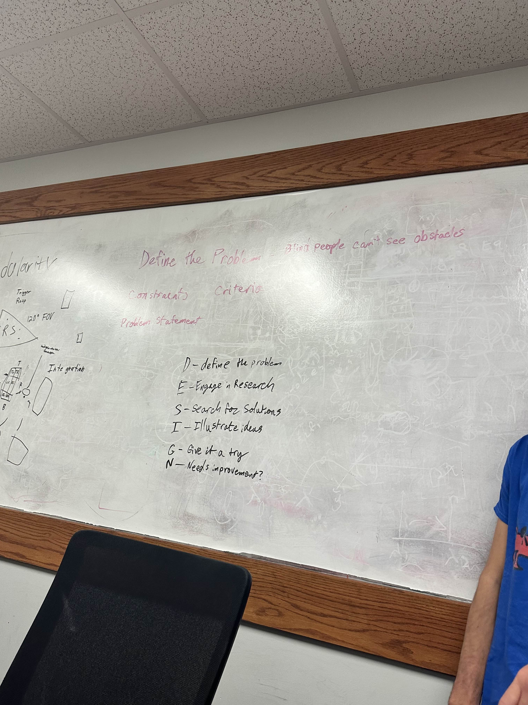
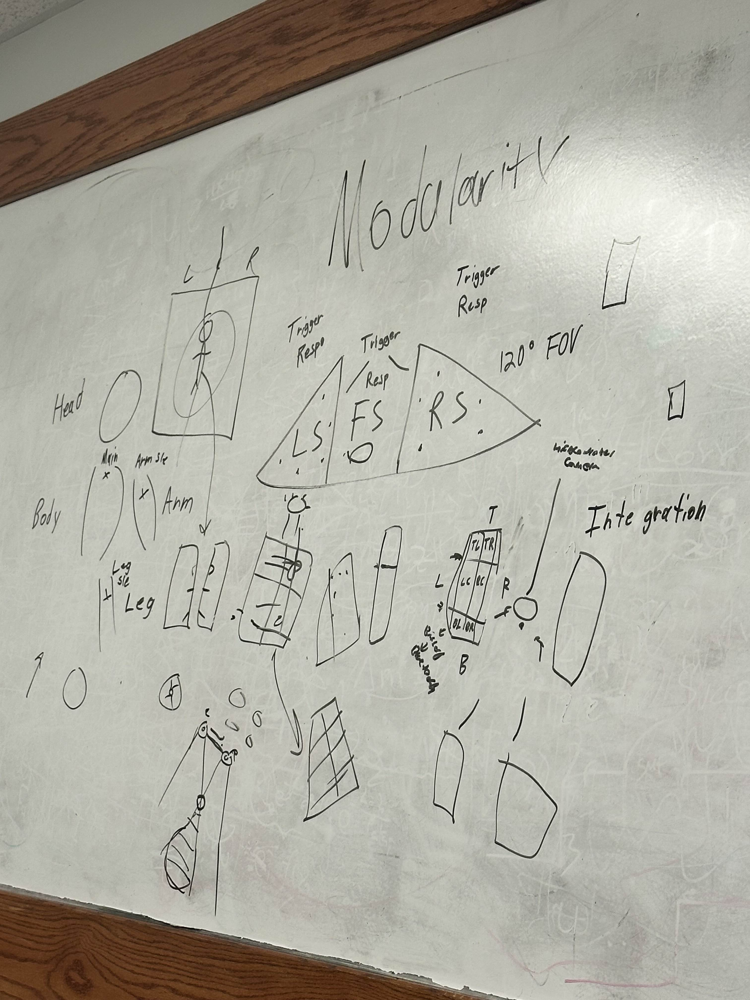

ODS
Object Detection System was a Biomedical Engineering Society club project focused on developing a real-time object detection system for the blind. I planned and assited with the overall project design as well as the implementation of the system. It would allow individuals with visual impairments to navigate their surroundings more safely. The design idea was to use a stereoscopic camera setup to cature depth information and generate a depth map. This depth map would then be processed with detection data. If an object was detected within a certain distance threshold, the system would trigger the motors which would put tension on a string or clothing attached to the user, providing a tactile alert. The project was focused on utilizing other senses in the sensory system of an individual.

Documents
Stuff
- item1
- item2
- item3
Gallery

